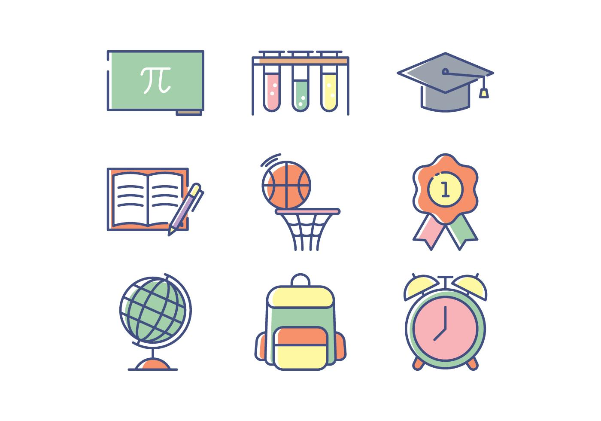

Especialidades
Nueatro establecimiento consta de dos especialidades. Economia y administración en el turno mañana, informatica en el turno tarde.
Nueatro establecimiento consta de dos especialidades. Economia y administración en el turno mañana, informatica en el turno tarde.
Los titulos con los que se egresan nuestros alumnos son: El titulos de bachiller de economia y administración, para los egresados del turno mañana, y el titulo de bachiller de informatica para los egrasados del turno tarde.
Los años del ciclo basico son de 1° a 3° año, y los años del ciclo orientado son de 4° a 6°. En total son 6 años dónde su hijo/a podra aprender todo lo que necesita para poder incorporarse al mudo laboral.